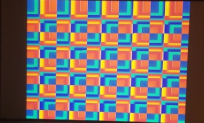
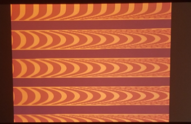
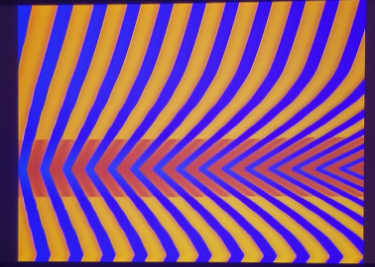

Project 2 - Analog to Digital
For this assignment the inspiration came from learning how to use the Vidiot video synthesizer. It was a lot of fun trying to create shapes and different colors by playing with patches that oscilated the brightness, Patching in the audio gave unpredictible and extreme results. The best results were aqcured by using the square wave oscilator. We used the oscilators both vertically and horizontally to get rectangles, and put other shapes in the rectangles as such.

I wanted to start figuring out how I could devide my entire screen into smaller rectangles. At first I was thinking of using multiple step functions, but then realized if I used the fract function on both the x and y values of my gl_FragCoord / resolution variable. I animated a zooming in and out by making the fract variables time dependent around a sin() function, making the squares larger and smaller on both axis, Then I wanted to use luma keying to brighten up a certain area of the entire shader. So I added a parabola function to the pulse variables for a certain parabolic are on both the x and the y axis. I chose a parabolic function because I wanted to get a semicircular shape similar to some shapes we were able to create with the Vidiot.

Then I started changing the luma keying so I could see different effects, but it just lit up every color making everything white instead. So I started changing the position and the cone size of the parabolic curves, to see how they reacted with each other, and it made the colors in the middle of the two shapes brighten. Later I swapped the two values given to the fract function on the y axis, and it made the rectangles get smaller as they went down. And finally I was able to give an create intersting semicircle shapes inside the rectangles by using one parabola function, and the semicircles changed directions when the rectangles were colapsing compared to expanding.
From the feedback I got from my classmates Cole and Alp, I got compliments for having a live coding approach, and I was able to get effects resembling out experiments using the Vidiot. They said that using trigonometric functions like tan() really added to the variability of the motion. They liked my luma keying using the cone of brightness, and the inversion of the shapes through wave cycles.
